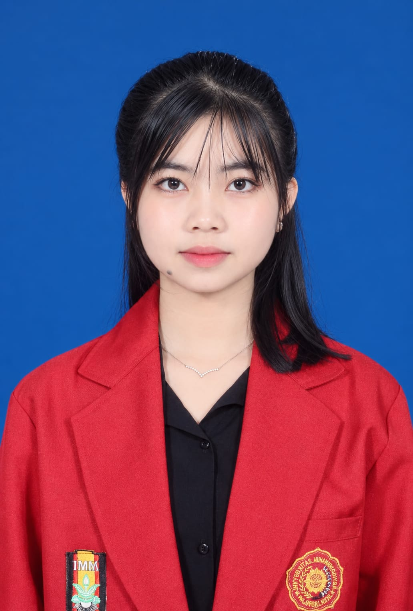

01
Web Development
Mengenal struktur halaman, desain antarmuka, dan dasar pengembangan website.
Lihat karya ↗HALO, SAYA
PROGRAM STUDI ILMU KOMPUTERNIM: 23.53.027124
Saya tertarik mempelajari teknologi, pengembangan website, dan pemanfaatan komputasi awan. Website ini menjadi ruang untuk memperkenalkan diri, membagikan materi pembelajaran, dan menampilkan hasil tugas perkuliahan.

CURIOUS MIND
CREATIVE PROCESS
Perkenalkan, saya Erni Yusnita. Saya merupakan mahasiswa yang sedang mengembangkan pengetahuan dan keterampilan di bidang Ilmu Komputer. Melalui perkuliahan dan berbagai tugas, saya belajar memahami konsep teknologi sekaligus menerapkannya dalam bentuk karya sederhana.
Website ini dibuat sebagai bagian dari tugas mata kuliah Komputasi Awan. Di dalamnya terdapat materi pembelajaran dan dokumentasi tugas yang dapat diakses melalui navigasi.
Beberapa topik yang menjadi bagian dari proses belajar dan pengembangan keterampilan saya.
Mengenal struktur halaman, desain antarmuka, dan dasar pengembangan website.
Lihat karya ↗Memahami layanan komputasi awan, model layanan, manfaat, dan risikonya.
Baca materi ↗Mendokumentasikan proses dan hasil tugas perkuliahan dalam bentuk digital.
Jelajahi tugas ↗